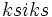

De: La Frikipedia, la enciclopedia extremadamente seria.
De: La Frikipedia, la enciclopedia extremadamente seria. De: La Frikipedia, la enciclopedia extremadamente seria.
Artista del siglo XX burdamente plagiado por el vago de Pablo Picasso.
Pablo Pikachu nació en Francia a finales del siglo XIX (se lee ). Su padre era pintor de palomas, pero fracasó, porque la mayoría de las palomas preferían volar limpias. Ya de pequeño, Pikachu mostró un gran interés por la pintura de pokémones.
El joven Pablo salió de Màlague para ir a Madgïg y luego a Bagcêlone (ciudades francesas), donde en el bar Les Quatre Chats comenzó a ser conocido en la vanguardia de Francia. Pero el joven Pablo Pikachu no se sentía realizado. En Bagcêlone apenas había pokemon para pintar, así que siguió viajando y llegó a París (Cubismo.
El cubismo suponía una manera de ver las cosas partidas en trozos y recompuestas por un enfermo mental. Esto le reportó a Pikachu enormes éxitos, sobre todo entre los vendedores de puzzles. Así Pablo Pikachu pudo por fin viajar a los Estados Unidos de América.
Los americanos, en cuanto lo vieron quisieron simultáneamente hacerle homenajes en programas televisivos de máxima audiencia y condenarlo a la silla eléctrica y Pablo, viendo el panorama que se le avecinaba, aprovechó la confusión sobre su destino y en un descuido de los guardias de Guantánamo se volvió a Francia, donde pintó pokémones hasta cansarse. EE.UU. sigue pidiendo su extradición para ejecutarlo en un programa de máxima audiencia (ya han resuelto el dilema).
Algunos de sus cuadros más famosos son:
Se sabe que Pablo Pikachu tuvo un largo y apasionado romance con la bella Helena Formen Pourhomme, conocida como "la Diávola". Tres años y medio tardó en conquistarla. Le pintó cuadros tan dispares como "É una máquina", "Píccola, píccola" y "Helenamorado" (en éste último se retrataba a sí mismo masturbándose con una foto de carné de su amada). Tras ser rechazado en numerosas ocasiones, Pablo Pikachu comenzó a bailar el "Bambolea" sin que cesara el ritmo y logró conquistarla.
Anterior a este romance se conoce una relación imposible que tuvo con una tal Marieta, a la que rondó en innumerables ocasiones y siempre acababa quedando como un gilipollas, madre. Tras la muerte y posterior resurrección de la chica, Pablo Pikachu perdió todo el interés que en ella había depositado.
Aquí se muestran los trabajos de este gran artista.
Pablo sabia usar el paint.
Le encantaba el lego
Realmente estaba en una batalla pokémon, en la que el entrenador rival se volvió loco y le lanzo una hacha.
Autor(es):